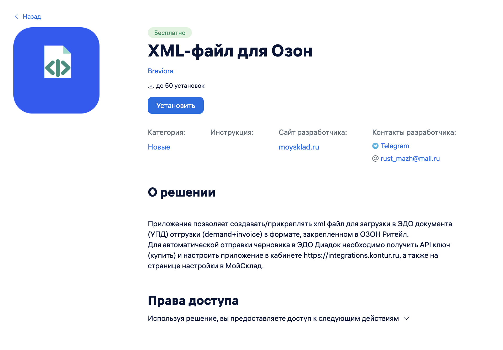
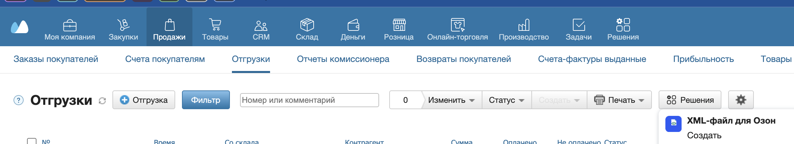
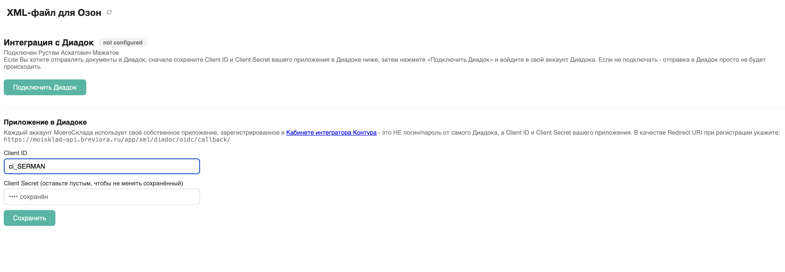
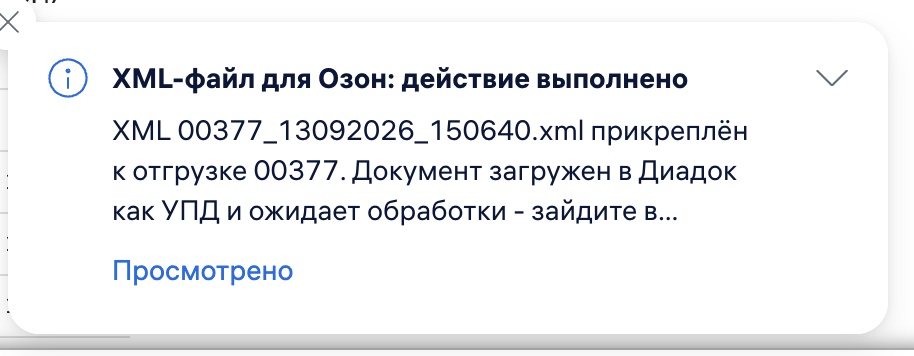

XML-файл для Озон
Кнопка на Отгрузке формирует XML-файл в формате Озон и прикрепляет его к документу в МойСклад.
1 Установите решение
Откройте каталог приложений в МойСклад, найдите «XML-файл для Озон» и нажмите «Установить».

2 Нажмите кнопку на Отгрузке
Откройте нужную Отгрузку и нажмите «Создать». Решение соберёт XML, прикрепит его к документу и (если подключён Диадок) отправит туда же.

3 Подключите Диадок (опционально)
Чтобы файл дополнительно уходил в Контур.Диадок, в настройках решения заполните раздел «Приложение в Диадоке» и подключите Диадок. Без этого шага XML просто прикрепляется в МойСклад.

4 Готово
XML-файл прикреплён к отгрузке. Появится уведомление об успехе. Скачайте файл из вложений документа и передайте в Озон.
